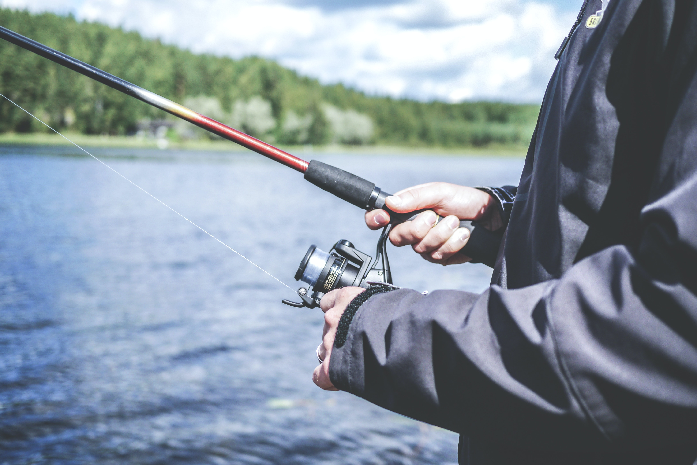

One of the things I love most is playing the guitar. When I started playing I
thought I was much too old to start learning at the time (23) but looking back now I'm so glad I didnt doubt myself and finally started. It eventually
lead me down a rabbit hole of learning a few other instruments and diving deeper into other genre's of music.
Over 6 years later, I'm still learning and playing today.
My love of food comes from my culture. I'm Vietnamese with parents who immigrated from Vietnam. I am incredibly proud of my ancestors for many reasons but the
easiest one to pinpoint is the cuisine. With both chinese and french influences, Vietnamese food is known around the world as some of the absolute best.
Just check out one of the late Anthony Bourdain's (RIP) many videos in and around Vietnam.

Fishing is one of those things that people think are for older people. While a large amount of people in the hobby are older men, I think that it has it place for
anyone who wants to get outside and do something relaxing AND exciting at the same time. Fishing helps me get out into the outdoors and away from all the screens.
I guess you can say I'm HOOKED.